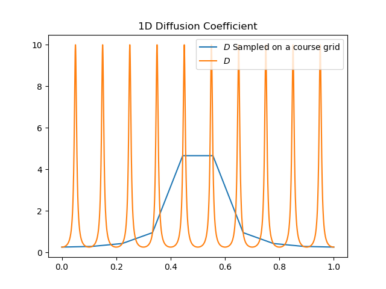
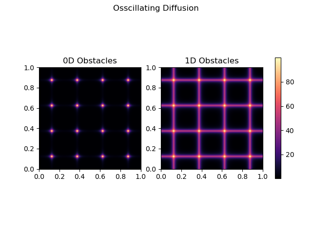
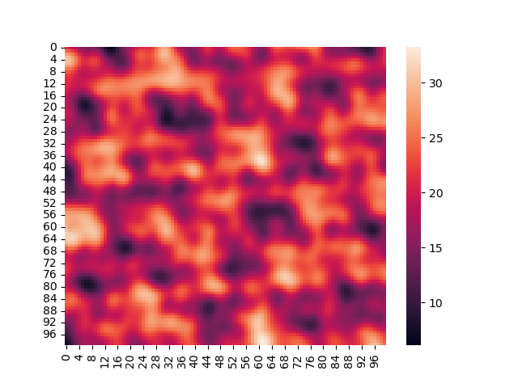
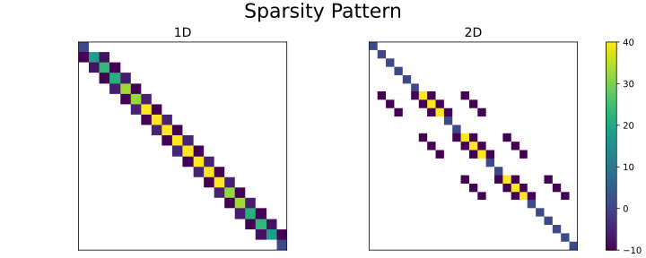
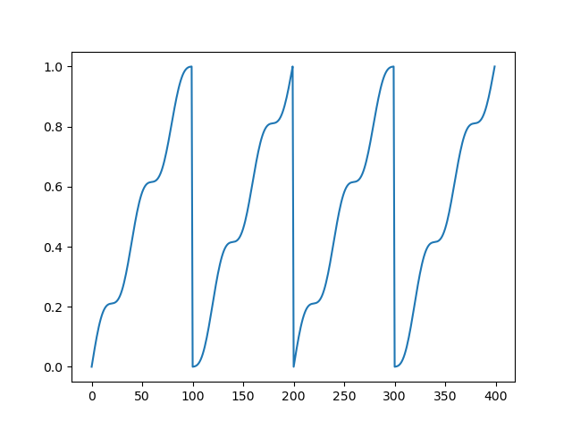
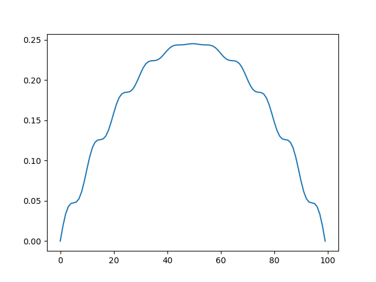
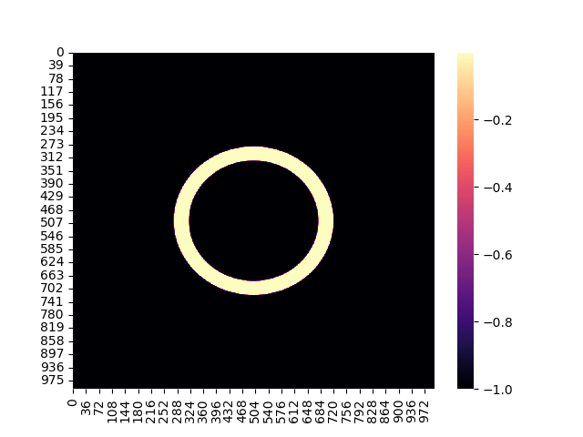
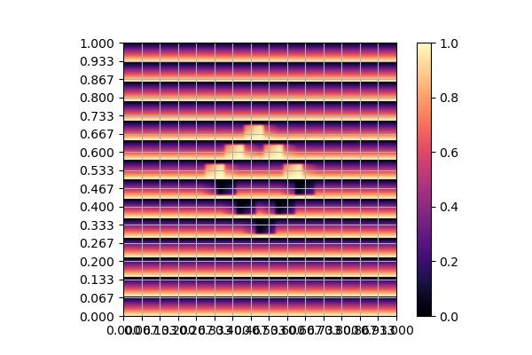
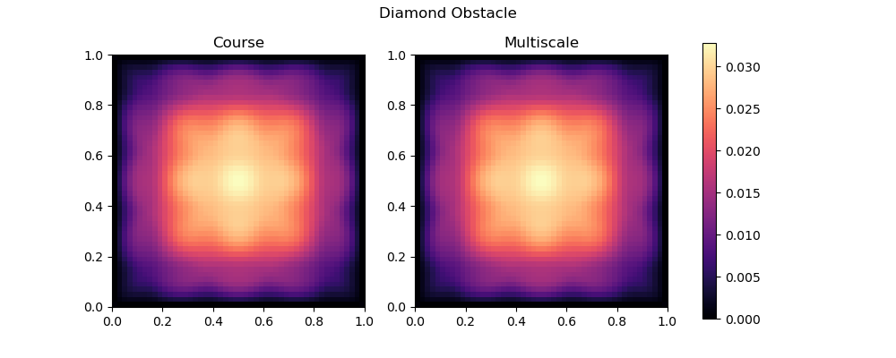

Fv
Table of Contents
import numpy as np
1. Standard Diffusion equation
1.1. Derivation of the 1D Finite Volume Method
The Finite Volume method considers the differential equation in Integral form over disjunct (\(Q_i \cap Q_j = \emptyset , i\neq j\)) reference cells \(Q_{i}\), \(\bigcup_{i=1}^N Q_{i} = \Omega \) and calculates the integral over them, with an integral over the reference cell boundaries using Stokes integration.
\begin{align} \label{eq:fv-integral} \int_{Q_i} \nabla \cdot (D(x) \nabla c ) &= \int_{Q_i} f(x) \, \mathrm{d}x & i&=1, \dots , N\\ \int_{\partial Q_i} D(x) \nabla c \cdot \vec{n} \, \mathrm{d}S \, &= \int_{Q_i} f(x) \, \mathrm{d} x & i&=1, \dots , N \end{align}The Finite Volume Method then considers the solution piecewise constant on \(Q\). This creates discontinuities on the cell boundaries, where the values are not uniquely defined. The Finite Volume method therefore introduces a numerical flux in the Ansatz and solves the integral over the flux instead. since the assumed solution is constant we approximation the source term \(f(\vec{x})\) with its value on the cell center \(x_i\) of \(Q_i\) and calculate the integrals directly.
\begin{align} \label{eq:fv-integral} \int_{\partial Q_i} g(c^+, c^-) \cdot \vec{n} \, \mathrm{d}S \, &= \int_{Q_i} f(x) \, \mathrm{d} x & i&=1, \dots , N\\ \int_{\partial Q_i} g(c^+, c^-) \cdot \vec{n} \, \mathrm{d}S \,&= |Q_i| f(x_i) & i&=1, \dots , N \end{align}1.2. Example diffusion terms
We investigate of single and multiscale solvers with different Diffusion functions, that we introduce in the followin sections
1.2.1. 1D
Since the Aim of multiscale Finite Volume, is to improve the results for highly fluctuating diffusivities, we test with the following oscillating function
\begin{align*} D(x) &= \frac{1}{2+ 1.9 \cos \left( \frac{2 \pi x}{\epsilon} \right)} \end{align*}def oscillation(x, eps = 0.1):
return 1 / (2+1.9 * np.cos(2 * np.pi* x / eps))

Figure 1: Oscillating Diffusivity for 1D finite volume method
1.2.2. 2D Box Condition
To test numerical stability of our methods we introduce a box constrain condition, that traps some concentration in the center.
alpha = 1.
gamma = 0.002
exp_kernel = lambda r: alpha * np.exp( - r / gamma)
def R(x,y , p=2):
center = np.array([0.5,0.5])
r = 0.2
thicc = 0.03
return np.maximum(0. , np.abs((np.abs(x -center[0])**p + np.abs(y - center[1])**p)**(1/p) - r) - thicc)
def box(x,y , p=2):
return np.maximum(0.0005 , 1. - exp_kernel(R(x,y , p=100)))
def circle(x,y , p=2):
return np.maximum(0.0005 , 1. - exp_kernel(R(x,y , p=2)))
def rhombus(x,y , p=2):
return np.maximum(0.0005 , 1. - exp_kernel(R(x,y , p=1)))
Figure 2: Constraints restricting flow from the center of the Domain
1.2.3. 2D Oscillation
def osc2D_point(x,y , eps = 0.25):
return oscillation(x, eps=eps) * oscillation(y, eps=eps)
def osc2D_line(x,y , eps = 0.25):
return oscillation(x, eps=eps) + oscillation(y, eps=eps)
import src.diffusion as D
reload(D)
N = 1000
M = 1000
x = np.linspace(0.,1., N)
y= np.linspace(0.,1., M)
grid = np.meshgrid(x,y)
diffusion_b = D.osc2D_point(grid[0] , grid[1])
diffusion_b = diffusion_b.reshape((N,M))
diffusion_c = D.osc2D_line(grid[0] , grid[1])
diffusion_c = diffusion_c.reshape((N,M))
fig,axis= plt.subplots(1,2)
im1 = axis[0].imshow(diffusion_b , cmap="magma" , extent=[0,1,0,1])
axis[0].set_title(r"0D Obstacles")
im2 = axis[1].imshow(diffusion_c , cmap="magma" , extent=[0,1,0,1])
axis[1].set_title(r"1D Obstacles")
#fig.colorbar()
fig.suptitle(r"Osscillating Diffusion")
fig.colorbar(im1 ,ax=axis , fraction=0.025)

1.2.4. 1D Noise
def noise1D(x,scale=10. , frequencies=5):
s = lambda x ,f , a , o: a* np.sin(f*2*np.pi*(x + o))
coeffs = np.random.rand(frequencies,3)
res = np.zeros(len(x))
for i in range(frequencies):
res += s(x, scale *coeffs[i,0] ,coeffs[i,1] , coeffs[i,2] )
res = res / (2*np.sum(coeffs[:,1])) + 0.5
return res
import src.diffusion as D
reload(D)
x = np.linspace(0,1)
plt.plot(D.noise1D(x))
1.2.5. Noise 2D

for example upwind
\begin{align*} g(c^+ , c^-) = - D(x^{\frac{1}{2} +}) \frac{c^+ - c^-}{h} \end{align*} \begin{align*} g(c^+ , c^-) &= T_{\pm } * \left( c^+ - c^- \right) \\ T_{\pm } &= - D(x^{\frac{1}{2}+}) \frac{1}{h} \end{align*}Linear System
\begin{align*} \int_{\partial Q_{i}} D(x_{i}) \nabla c \cdot \vec{n} \, \mathrm{d}S &= |Q| \overline{f}(x_{i}) \\ \sum_{j \in \left\{ -1,1 \right\} } j * g(c_{i+j+1} , c_{i+j}) &= h \overline{f}(x_{i}) \end{align*}2. Finite Volume 1D
2.1. Program Structure
For convenience in Explanation and Execution, we bundle all required information for solving a 1D system into a python class, which is structured as follows
class FVSolver:
N : int
h : np.float64
x : NDArray[np.float64]
D : Callable
f : NDArray[np.float64]
c : NDArray[np.float64]
_T : NDArray[np.float64]
<<Init>>
<<Assemble Matrix>>
<<Boundary>>
<<Solve>>
<<Microscale Transmissions>>
def __init__(self , N :int , D :Callable , domain=(0.,1.))->None:
self.h = (domain[1] - domain[0]) / N
self.N = N
self.D = D
self.x = np.linspace(domain[0] , domain[1] , N)
self._T = -1/self.h * D((self.x[:-1] + self.x[1:]) * 0.5)
self.f = self.h* np.ones(N)
def solve(self):
self.c = spsolve(self._A.tocsr() , self.f)
return self.c
def set_boundary(self , bc=(0.,0.)):
self.f[0] = bc[0]
self.f[-1] = bc[1]
Matrix Assembly
def assemble_matrix(self)-> None:
diagp1 = np.zeros(self.N)
diagp1[2:] = self._T[1:]
diagm1 = np.zeros(self.N)
diagm1[:-2] = self._T[:-1]
diag0 = np.ones(self.N)
diag0[1:-1] = -1 * (self._T[1:] + self._T[:-1])
self._A = spdiags([diagm1 , diag0 , diagp1] , np.array( [-1, 0, 1] ))
sns.heatmap(A.todense())
plt.title("Sparsity Patter of A")

3. Multiscale
In 1D
def set_multiscale_transmissions(self, resolution)->NDArray[np.float64]:
micro_basis = np.zeros((self.N -1)*resolution)
for i in range(self.N -1):
micro_fv = FVSolver(resolution , self.D , domain=(self.x[i] , self.x[i+1]))
micro_fv.set_boundary(bc=(0.,1.))
micro_fv.assemble_matrix()
phi = micro_fv.solve()
micro_basis[resolution * i:resolution*(i+1)] = phi
hm = micro_fv.h
self._T[i] = -hm * np.sum(((phi[1:] - phi[:-1])/hm)**2 * self.D(micro_fv.x[:-1]))
return micro_basis
c_macro = sp.sparse.linalg.spsolve(A_macro.tocsr(),source)
c_multi = np.zeros((N-1)* n)
x = np.linspace(0,1,N)
x_multi = np.linspace(0,1 , n*(N-1))
for i in range(len(c_macro)-1):
t = micro_basis[n*i:n*(i+1)]
c_multi[n*i:n*(i+1)] = (1-t) * c_macro[i] + t * c_macro[i+1]
plt.plot(x,c)
plt.plot(x,c_macro)
plt.plot(x_multi,c_multi)
plt.plot(x_fine , c_fine)
plt.title("Comparison Of Different Solvers")
plt.xlabel(r"$x$")
plt.ylabel(r"$c(x)$")
plt.legend(["macro" , "multiscale", "multi_fine" , "reference"])

4. Cleanup
None
from importlib import reload
import src.fvsolver
from src.fvsolver import FVSolver
reload(src.fvsolver)
epsilon = 0.1
D = lambda x: 1 / (2+1.9 * np.cos(2 * np.pi* x / epsilon))
fv = FVSolver(10 , D)
fv.assemble_matrix()
fv.set_boundary()
c_course = fv.solve()
plt.plot(c_course)
mb = fv.set_multiscale_transmissions(100)
plt.plot(mb)

fv.assemble_matrix()
c_multi = fv.solve()
plt.plot(c_multi)

5. 2D
import scipy as sp
import numpy as np
class FVSolver2D:
N : int
M : int
h_x : np.float64
h_y : np.float64
x : NDArray[np.float64]
y : NDArray[np.float64]
D : Callable
f : NDArray[np.float64]
c : NDArray[np.float64]
_T_x : NDArray[np.float64]
_T_y : NDArray[np.float64]
<<Init 2D>>
<<Assemble 2D Matrix>>
def set_boundary(self , bc=(0.,0. , 0. , 0.)):
self.f[ 0,1:-1]= bc[0]
self.f[-1,1:-1]= bc[1]
self.f[1:-1, 0]= bc[2]
self.f[1:-1,-1]= bc[3]
def solve(self):
self.c = spsolve(self._A.tocsr() , self.f.ravel()).reshape((self.N,self.M))
return self.c
<<2D Microscale Transmissions>>
def __init__(self ,
N:int,
M:int ,
D :Callable ,
domain=np.array([[0.,0.] , [1.,1.]]),
)->None:
self.h_x = (domain[1,0] - domain[0,0]) / N
self.h_y = (domain[1,1] - domain[0,1]) / M
self.x = np.linspace(domain[0,0] , domain[1,0] , N)
self.y = np.linspace(domain[0,1] , domain[1,1] , M)
x_h = self.x[:-1] + 0.5 * self.h_x
y_h = self.y[:-1] + 0.5 * self.h_y
halfgrid_x = np.meshgrid(x_h,self.y,indexing="ij")
halfgrid_y = np.meshgrid(self.x,y_h , indexing="ij")
self._T_x = -self.h_y/self.h_x * D(halfgrid_x[0] , halfgrid_x[1])
self._T_y = -self.h_x/self.h_y * D(halfgrid_y[0] , halfgrid_y[1])
self.N = N
self.M = M
self.D = D
self.f = self.h_x * self.h_y* np.ones((N, M))
def assemble_matrix(self)->None:
main_diag = np.ones(( self.N,self.M))
diag_north = np.zeros((self.N,self.M))
diag_south = np.zeros((self.N,self.M))
diag_east = np.zeros(( self.N,self.M))
diag_west = np.zeros(( self.N,self.M))
main_diag[1:-1,1:-1] = -1* (self._T_x[:-1,1:-1] + self._T_x[1:,1:-1] + self._T_y[1:-1,:-1] + self._T_y[1:-1,1:])
main_diag = np.ravel(main_diag)
diag_north[1:-1,1:-1] = self._T_y[1:-1,:-1]
diag_south[1:-1,1:-1] = self._T_y[1:-1,1:]
diag_east[1:-1,1:-1] = self._T_x[1:,1:-1]
diag_west[1:-1,1:-1] = self._T_x[:-1,1:-1]
diag_north = diag_north.ravel()
diag_south = diag_south.ravel()
diag_west = diag_west.ravel()
diag_east = diag_east.ravel()
A = sp.sparse.spdiags([main_diag , diag_north , diag_south , diag_west , diag_east] , [0 , -self.N , self.N , 1 , -1] , self.N*self.M , self.M*self.N)
self._A = A.T
on a \(N \times M\) grid
5.1. Numerical Flux in 2D
The boundary term can then be approximated by
\begin{align*} - g_{x}(c_{i,j} , c_{i-1,j}) + g_{x}(c_{i+1,j} , c_{ij}) - g_y(c_{i,j} , c_{i,j-1}) + g_y(c_{i,j+1} , c_{ij}) &= \Delta_x \Delta_y f(x_{ij}) \end{align*}One Dimensionalize the index
\begin{align*} - g_{x}(c_{i + Nj} , c_{i-1 + Nj}) + g_{x}(c_{i+1 + Nj} , c_{i + Nj}) - g_y(c_{i + Nj} , c_{i + N(j-1)}) + g_y(c_{i + N(j+1)} , c_{i + Nj}) &= \Delta_x \Delta_y f(x_{i + Nj}) \end{align*}plug in Flux Approach with \(\Delta_x = \Delta_y = h\)
\begin{align*} & \left(D(x-\frac{h}{2},y)c_{i+Nj}-D(x-\frac{h}{2},y)c_{i-1+Nj}\right)\\ &-\left(D(x+\frac{h}{2},y)c_{i+1+Nj}-D(x+\frac{h}{2},y)c_{i+Nj}\right)\\ &+\left(D(x,y-\frac{h}{2})c_{i+Nj}-D(x,y-\frac{h}{2})c_{i+N(j-1)}\right)\\ &-\left(D(x,y+\frac{h}{2})c_{i+N(j+1)}-D(x,y+\frac{h}{2})c_{i+Nj}\right) \end{align*} \begin{align*} & D(x-\frac{h}{2},y)c_{i+Nj}-D(x-\frac{h}{2},y)c_{i-1+Nj} \\ &-D(x+\frac{h}{2},y)c_{i+1+Nj}+D(x+\frac{h}{2},y)c_{i+Nj} \\ & D(x,y-\frac{h}{2})c_{i+Nj}-D(x,y-\frac{h}{2})c_{i+N(j-1)}\\ &-D(x,y+\frac{h}{2})c_{i+N(j+1)}+D(x,y+\frac{h}{2})c_{i+Nj} \end{align*} \begin{align*} & -D(x-\frac{h}{2},y)c_{i-1+Nj} \\ &-D(x+\frac{h}{2},y)c_{i+1+Nj} \\ & -D(x,y-\frac{h}{2})c_{i+N(j-1)}\\ &-D(x,y+\frac{h}{2})c_{i+N(j+1)}\\ \left(D(x-\frac{h}{2},y) + D(x+\frac{h}{2},y) + D(x,y-\frac{h}{2}) + D(x,y+\frac{h}{2}) \right) c_{i+Nj} \end{align*}import os
# Set this before importing NumPy/SciPy
os.environ["OMP_NUM_THREADS"] = "16" # For MKL/OpenMP
os.environ["OPENBLAS_NUM_THREADS"] = "16" # For OpenBLAS
os.environ["MKL_NUM_THREADS"] = "16" # For Intel MKL
os.environ["NUMEXPR_NUM_THREADS"] = "16" # Just in case
import numpy as np
import scipy
None
import seaborn as sns
import matplotlib.pyplot as plt
import numpy as np
reload(src.fvsolver)
from src.fvsolver import FVSolver2D
smol_fv = FVSolver2D(10,10,D)
smol_fv.assemble_matrix()
plt.imshow(smol_fv._A.todense())
#plt.spy(A.T, markersize=1)
fv2D = FVSolver2D(N,M,D)
sns.heatmap(fv2D._T_y, cmap="magma")

fv2D = FVSolver2D(N,M,D)
fv2D.assemble_matrix()
fv2D.set_boundary()
c = fv2D.solve()
sns.heatmap(c, cmap="magma")

error =np.linalg.norm(A@c_vec - f)
print(error)
1.025105313314805e-12
fig = plt.figure()
ax = fig.add_subplot(111, projection='3d')
ax.plot_surface(grid[0] ,grid[1],c , cmap="magma")
6. 2D Multiscale
def set_multiscale_transmissions(self, resolution):
microscale_basis_x = np.zeros((self._T_x.shape[0] , self._T_x.shape[1] , resolution))
microscale_basis_y = np.zeros((self._T_y.shape[0] , self._T_y.shape[1] , resolution))
for i in range(self._T_x.shape[0]):
for j in range(self._T_x.shape[1]):
#Do mircroscale x
D_micro = lambda x: self.D(x, self.y[j])
fv_micro = FVSolver(resolution , D_micro, domain=(self.x[i] , self.x[i+1]))
fv_micro.assemble_matrix()
fv_micro.set_boundary(bc=(0.,1.))
phi =fv_micro.solve()
microscale_basis_x[i,j,:] = phi
self._T_x[i,j] = -fv_micro.h * self.h_y* np.sum(((phi[1:] - phi[:-1])/fv_micro.h)**2 * D_micro(fv_micro.x[:-1]))
for i in range(self._T_y.shape[0]):
for j in range(self._T_y.shape[1]):
# Do microscale y
D_micro = lambda y: self.D(self.x[i], y)
fv_micro = FVSolver(resolution , D_micro, domain=(self.y[j] , self.y[j+1]))
fv_micro.assemble_matrix()
fv_micro.set_boundary(bc=(0.,1.))
phi =fv_micro.solve()
microscale_basis_y[i,j,:] = phi
self._T_y[i,j] = -fv_micro.h * self.h_x * np.sum(((phi[1:] - phi[:-1])/fv_micro.h)**2 * D_micro(fv_micro.x[:-1]))
return microscale_basis_x , microscale_basis_y
reload(src.fvsolver)
from src.fvsolver import FVSolver2D
fv2D = FVSolver2D(100,100,D)
mx,my = fv2D.set_multiscale_transmissions(100)
fv2D.assemble_matrix()
fv2D.set_boundary()
c = fv2D.solve()
sns.heatmap(c, cmap="magma")

7. Reference Solution
Solution of the 2D Laplace equation:
\begin{align} \label{eq:poisson} - \Delta u(x,y) &= f(x,y) & \text{in} \quad \Omega \\ u(x,y) &= 0 & \text{on} \quad \Gamma_D \end{align}where \(f(x,y) = 2 * (x+y - x^2 - y^2) \) the analytical solution is
\begin{align*} u(x,y) &= x * (1-x) * y * (1-y) \end{align*}